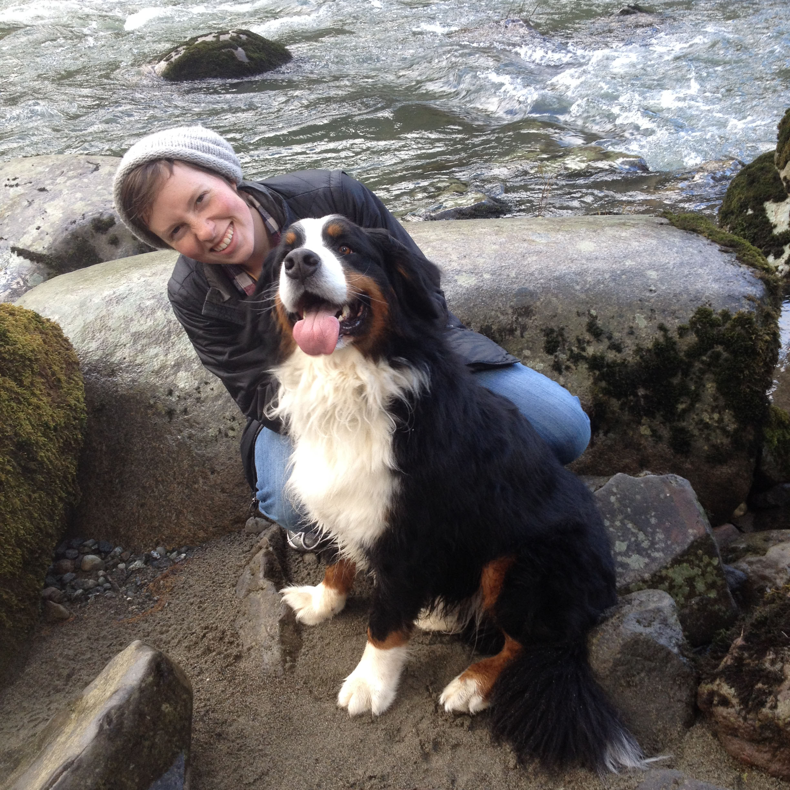
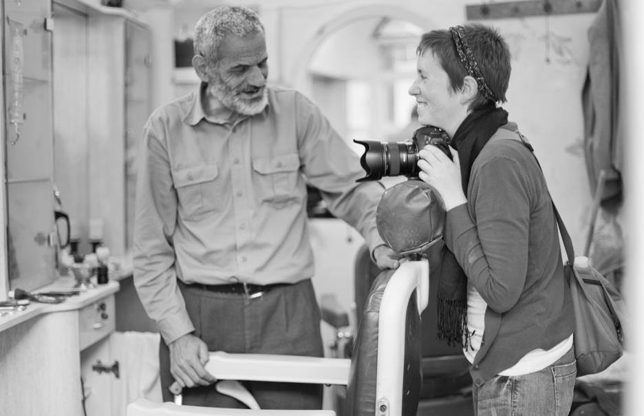

As a communicator and producer, I aim to inspire and foster action towards creating good in the world by using the power of data and story as a catalyst for change. I come from the Pacific Northwest and currently live in the Georgetown neighbourhood of Seattle with my Bernese Mountain Dog, Guinness.
World Vision International | Dec 2017 - Dec 2018
World Vision International | Mar 2017 - Dec 2017
Helm & Harbor | Aug 2013 - Apr 2017
Avery Milo Parducci | +1 206-000-000 | ap@gmail.com